CAPÍTULO 1 - Expressões algébricas
Observe as figuras a seguir.
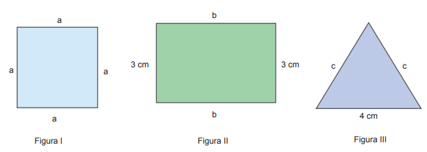

- Acima, temos 3 figuras que são polígonos. O perímetro de cada um deles pode ser representado por meio de uma expressão algébrica. Troque ideias com um colega e escrevam, no caderno, as expressões que indicam esses perímetros.
- Converse com seu colega e expliquem como podemos definir uma expressão algébrica.
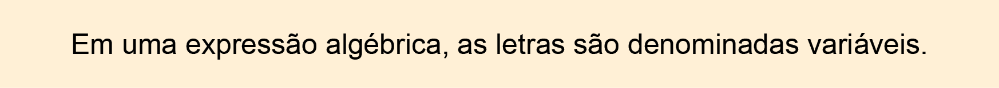
Valor numérico de uma expressão algébrica
Nos polígonos a seguir, podemos calcular os valores dos perímetros em que a = 3 cm, b = 4 cm e c = 6,5 cm.
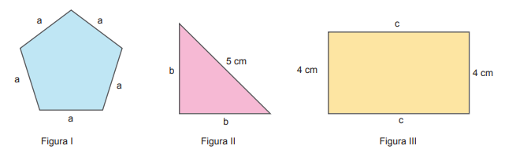
59
Para isso, vamos substituir as variáveis pelos números em cada uma das expressões algébricas que representam os perímetros das figuras. Observe:
- Figura I: 5a = 5 ∙ 3 = 15 cm.
- Figura II: 2b + 5 = 2 ∙ 4 + 5 = 8 + 5 = 13 cm.
- Figura III: 2c + 8 = 2 ∙ 6,5 + 8 = 13 + 8 = 21 cm.
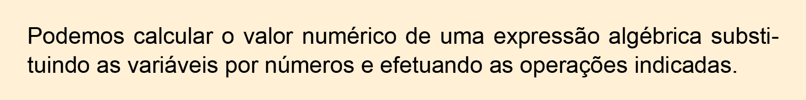
Observe outras situações:
Situação 1
- Calcular o valor numérico da expressão algébrica x2 + x - 5 quando x = 3.
x2 + x - 5 = 32 + 3 - 5 = 9 + 3 - 5 = 12 - 5 = 7
Situação 2
- Calcular o valor numérico da expressão algébrica xy - x2y2 + 8 em que x = 4 e y = - 2.
xy - x2y2 + 8 = 4 ∙ (- 2) - 42 ∙ (- 2)2 + 8 = - 8 - 16 ∙ 4 + 8 =
= - 8 - 64 + 8 = - 72 + 8 = - 64
Encontre soluções
- Sendo x um número desconhecido, em seu caderno, escreva a expressão algébrica que represente:
- o triplo desse número;
- esse número mais 35;
- o quádruplo desse número menos 18;
- o antecessor desse número;
- o sucessor desse número;
- o dobro do sucessor desse número;
- a soma do quíntuplo desse número e a sua terça parte.
- No caderno, escreva a expressão algébrica que representa cada uma das situações a seguir.
- João tem 18 anos. Qual será a idade de João daqui a x anos?
- Uma caneta custa 4 reais e um lápis custa 3 reais. Se eu comprar m canetas e n lápis, qual será o valor que irei gastar?
- Em um seminário, há 150 pessoas. Sendo a o número de mulheres, qual é o número de homens que participam do seminário?
60
- Escreva as expressões algébricas que representam os perímetros das figuras a seguir e calcule os seus valores numéricos, em que a = 5 cm e b = 7 cm.
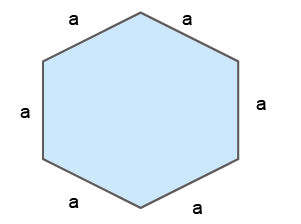
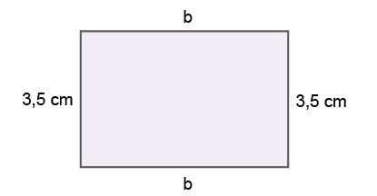
- Para calcular a dose infantil de um medicamento a ser ministrado a uma criança de até 12 anos, muitos pediatras utilizam a expressão 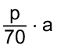, em que p representa o "peso" da criança e a representa a dose que é ministrada a um adulto. Sendo assim, determine a dose de um medicamento que deve ser ministrada a uma criança com 14 kg, em que a dose correspondente a de um adulto é de 100 mg.
- Estalagmites são formações que crescem a partir do chão e vão em direção ao teto. Provenientes da precipitação de carbonato de cálcio arrastado pela água que cai do teto, são frequentemente encontradas em cavernas e grutas. A sua formação é lenta e a sua altura, em centímetros, em uma determinada caverna, pode ser calculada pela expressão 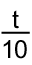, em que t representa o tempo, em anos, decorrido desde o início da sua formação. Qual será a altura de uma estalagmite decorridos 55 anos?
- De acordo com os fisiologistas, em um indivíduo sadio e em repouso o número de batimentos cardíacos por minuto varia em função da temperatura ambiente t (em graus Celsius), de acordo com a expressão 0,1t2 - 4t + 90. Calcule o número de batimentos cardíacos por minuto de uma pessoa sadia e em repouso que se encontra em um ambiente cuja temperatura é de 30º C.
- Em seu caderno, calcule o valor numérico das seguintes expressões algébricas:
- y5 - y + 6, em que y = 2
- x4 - 7x + 1, em que x = -1
- 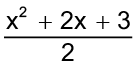, em que x = 5
- 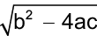, em que a = 1; b = 5 e c = 4
- m + n, em que 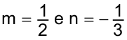
- b2 - c3, em que 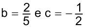